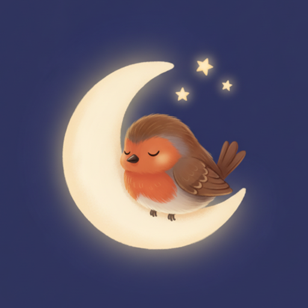
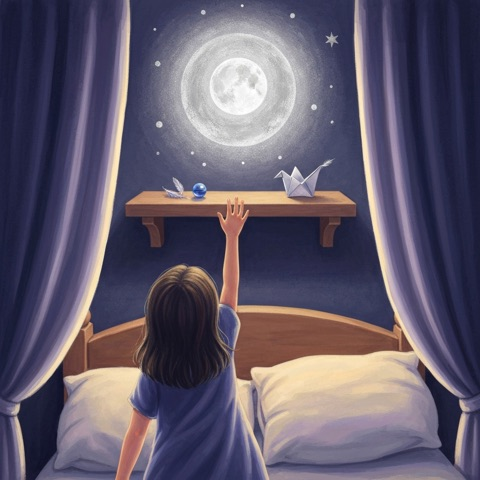
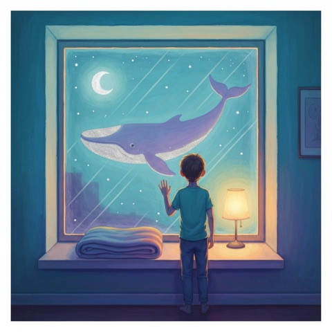
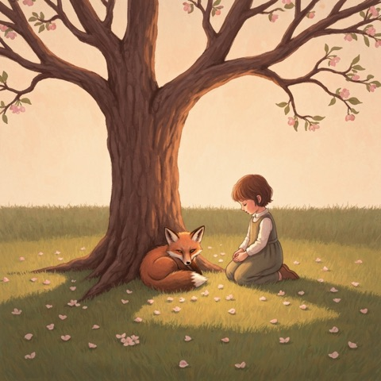
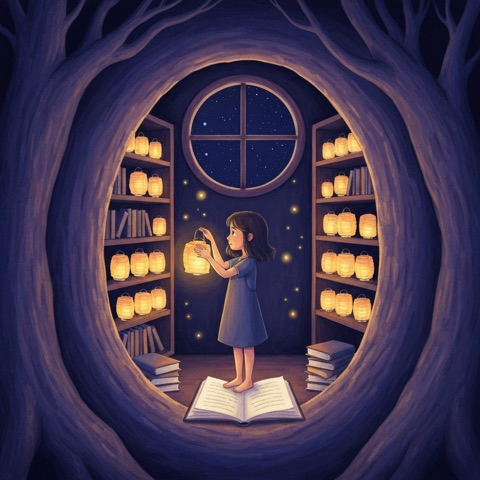
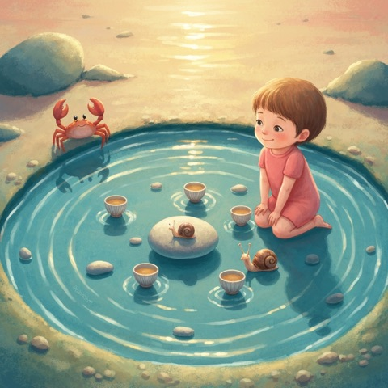

Robin Bedtime Stories for Kids
Calm sleep stories, read aloud by a warm narrator
Free for iPhone and iPad · 8 free stories · one-time unlock for all 35, no subscription
Robin is a bedtime story app for children aged 6 to 10. Every story is original, narrated and written to help busy minds slow down at the end of the day: a small feeling, a gentle worry, a quiet moment to reflect and a peaceful ending. Tap play, dim the lights and let Robin read your child to sleep.
What makes Robin different
- Read aloud, line by line. A soft, unhurried narrator reads every story, and the words glow on screen as they are spoken so early readers can follow along.
- 35 original bedtime stories. More than four hours of narration across five worlds: Forest, Ocean, Stars, Animals and Family. Each story is about 6 to 11 minutes long.
- Made for sleepy time. A sleep timer fades the story out, audio keeps playing with the screen locked, and you can slow the reading down.
- Works offline. Stories and narration live on the device — perfect for travel, airplanes and car rides.
- Safe for families. No ads, no accounts, no tracking, no chat. Rated 4+.





All 35 bedtime stories
Forest stories
Pine groves, mossy hills and gardens that listen.
- The Whisper of the Pine Grove Free · 6 min
Otis searches the pine grove for his grandmother's thimble and learns the quiet power of slowing down. - The Garden That Listened Free · 9 min
A garden helps a child put difficult feelings into something growing and gentle. - The Quiet Map · 11 min
Robin and Grandpa search for a hidden place that only reveals itself to those who slow down. - Penny and the Laughing Garden · 7 min
Penny wants a serious garden, but her seeds grow into trumpet flowers that make everyone laugh. - Opal and the Door in the Hill · 9 min
Opal finds a tiny door in a mossy hill and learns that some adventures ask us to listen before entering. - The Bear Who Built a Tiny Bridge · 7 min
Bobo the bear tries to build a bridge across a little stream, and learns that some bridges are made for feelings before they are made for feet. - The Fern That Wanted to Dance · 8 min
Fia the fern wants to dance in a forest where ferns are expected to sway quietly.
Ocean stories
Tides, tidepools, lighthouses and a whale in the window.
- The Tide That Listens · 6 min
Yara brings an unnamed sadness to the shore and finds a calmer rhythm in the tide. - The Whale in the Window · 9 min
A lonely child paints a whale on the bedroom window and finds a quiet friend in the night. - The Sea Glass Committee Free · 7 min
Three children try to build the perfect sea-glass museum, but everyone has a different idea of perfect. - The Lighthouse That Loved Questions · 7 min
Toma visits an old lighthouse that answers questions only by showing him where to look. - The Pelican Post Office · 7 min
A pelican postmaster teaches a child how to deliver letters along the shore—and how to notice what people really need. - The Tidepool Tea Party · 7 min
Noa is invited to a tiny tidepool tea party and learns that joining can happen one small sip at a time.
Stars stories
Moonlit shelves, star lanterns and a night train for wishes.
- The Quiet Light of Mira · 8 min
Mira follows a small evening light and discovers a quieter way to feel at home in the world. - The Moon Shelf Free · 9 min
Lena learns that precious things stay precious not by being protected, but by being lovingly touched. - The Star That Forgot Its Place · 11 min
A small star wanders out of its constellation and learns where it truly belongs. - The Kite That Learned to Wait Free · 7 min
Jonah builds a silver fish kite for star-watching night, but the wind refuses to arrive when he wants it to. - The Dragon Who Sent Thank-You Notes · 6 min
A shy little dragon thanks the night sky for helping him find courage, one tiny note at a time. - The Star-Lantern Library · 10 min
Mara discovers a tiny night library where lanterns hold the questions children are afraid to ask. - The Night Train for Lost Wishes · 9 min
Eli boards a moonlit train that collects lost wishes and learns that some wishes change shape when the heart grows quieter.
Animals stories
A gentle fox, a clockwork robin and a hedgehog trying not to sneeze.
- Pim and the Gentle Fox Free · 7 min
Pim finds a frightened young fox and learns that quiet courage is not the same as doing everything alone. - Finch and the Cloud Map · 9 min
Finch discovers that watching the sky carefully is a quiet kind of strength. - The Clockwork Robin · 9 min
A small mechanical bird visits a repair shop and learns that being different can still be beautiful. - Marlo and the Missing Laugh · 7 min
Marlo the marmot is usually the funniest animal in the meadow, but one day his laugh goes missing. - Lila and the Sock Parade · 7 min
When Lila’s socks keep disappearing, she discovers a secret parade organized by the mice under the stairs. - The Hedgehog Who Saved a Sneeze · 8 min
Hazel the hedgehog tries not to sneeze during the forest’s Quietest Ceremony, and discovers that kindness matters more than perfect silence. - Mrs. Moon and the Cat Bell · 6 min
Mrs. Moon the cat loses the bell that always announces her, and the household learns to notice her in quieter ways.
Family stories
Pillow forts, pancake planets and cups of quiet at the kitchen table.
- Two Cups of Quiet · 7 min
Henry brings a private worry to the kitchen table, where his father's quiet patience helps him find a gentler next step. - The Last Blue Button Free · 9 min
A blue button passed down through generations finds the right hand at the right time. - The Pillow Fort Library · 9 min
Two siblings build a tiny library inside their fort and learn that storytelling is its own kind of magic. - The Train Under the Blanket · 11 min
Two siblings turn bedtime into a slow, gentle train journey through imagined lands. - The Pancake Planet Free · 6 min
On a rainy morning, Dad’s pancake mistake turns breakfast into a journey around a tiny edible planet. - Mossy May and the Brave Little No · 6 min
May loves helping her family, but when everyone asks at once, she learns that a kind no can protect a quiet heart. - A Bowl for the Moon · 6 min
Mei sets an extra bowl for an aunt who cannot visit and discovers a family ritual that makes absence feel less empty. - Saturday in a Jar · 8 min
Theo wants to save a perfect Saturday in a jar, but learns that the best moments are kept by noticing them fully.
Questions parents ask
What age is Robin Bedtime Stories for?
Robin is written for children aged 6 to 10. The stories use short, gentle sentences and calm endings, so many families also use them with younger listeners.
Are the bedtime stories read aloud?
Yes. All 35 stories have a warm, pre-recorded narrator voice, and the words light up on screen line by line as they are read, so early readers can follow along.
Does the app work offline?
Yes. Every story and its narration is stored on the device, so Robin works without Wi-Fi or mobile data — on planes, in the car or in a bedroom with no signal.
How long are the stories?
Each story runs about 6 to 11 minutes, with more than four hours of narrated audio in total.
Is Robin free?
Robin is free to download and 8 stories are free forever. A single one-time purchase unlocks all 35 stories. There is no subscription.
Does Robin have ads or collect data?
No. There are no ads, no accounts, no analytics and no tracking. The only network use is the optional purchase and restore, handled by Apple and RevenueCat.
Is there a sleep timer?
Yes. A sleep timer lets the story fade out gently, and audio keeps playing with the screen locked, with lock-screen controls.